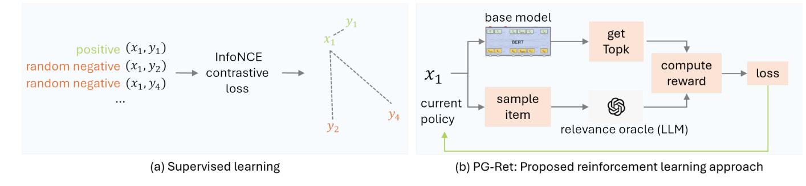

Optimizing Novelty of Top-k Recommendations using Large Language Models and Reinforcement Learning (基于大语言模型与强化学习的 Top-k 推荐新颖性优化)
- 会议/期刊: KDD 2024
- 作者与机构: Amit Sharma（Microsoft Research）、Hua Li、Xue Li、Jian Jiao（Microsoft Bing Ads）
- 推荐链路定位: 召回（Retrieval Layer，top-k = 200 送入下游精排）
- 研究方向: 强化学习与动态探索推荐 / 大语言模型推荐
- 论文原文: https://arxiv.org/abs/2406.14169v1
- 开源代码: 暂未开源
TL;DR (1分钟核心速览)
线上已部署 base 模型的系统若要上线"能带来新 item"的新召回模型，需优化 Novelty@k（top-k 与 base top-L 的不重叠数量），但 top-k 排序不可微、且新 item 天然无点击反馈。本文用 GPT-3.5 作相关性奖励模型补上缺失反馈，并将一次性 RL 的"query 为状态、top-k 列表为动作"重构为"⟨query,item⟩ 为状态、二值动作为动作"，理论证明收敛误差由 \(O(A^2)\)降为\(O(A)\)。在 33.2M 候选的工业 Query-Keyword 任务上，Novelty@200 从监督微调的 79.1 提升至 107.8（+36.3%），Recall@200 反升至 56.4，线上 A/B 点击产出 +0.26%。
Background & Motivation (背景与核心矛盾)
- 主流范式: 召回层普遍用双塔 bi-encoder + InfoNCE 对比损失，以点击/相关性为目标做全库向量近邻检索。
- 前人局限一: Novelty@k 依赖对预测分数的 top-k 排序，是不可微算子，梯度无法回传；直接多目标加权或启发式（低热度、冷门类目）只能优化"新颖性代理"，无法优化"相对已部署模型的真实新颖性"。
- 前人局限二: 真正新颖的 ⟨query,item⟩ 从未被曝光，没有任何用户反馈，缺少相关性信号时新颖性与相关性只能硬性对冲；靠线上探索收集反馈成本极高。
- 核心洞察 (Key Insight): LLM 在 query-item 相关性标注上已可媲美众包人工（>85% 准确率），且换 prompt 即可跨域复用——新颖 item 的奖励可由 LLM 廉价规模化生成。同时，策略梯度对动作空间的依赖是平方级的，这正是大规模召回（百万级动作）失效的根因。
- 本文切入点: 先用 LLM 补齐新颖 item 的奖励，再把 top-k 列表奖励可加分解并把动作空间压成二值，使 policy gradient 在百万级候选上可用。

Method (核心方法设计)
1. 整体框架 (Overall Architecture)
以已上线的 base 模型 \(\psi\)与监督微调模型为初始策略\(\pi_{\theta_0}\)（保证\(\pi_{\theta_0}\)优于随机策略，即 Assumption 2 中的\(\rho\)有限），每步从三种来源采样 ⟨query,item⟩ 状态：当前策略\(\pi_\theta\)（概率\(\alpha\)）、独立训练器/超出 base top-L 的探索策略（\(\beta\)）、原始日志反馈（\(1-\alpha-\beta\)），以避免对 LLM 奖励过拟合而"遗忘"真实用户反馈。对每个状态查询 GPT-3.5 得相关性、结合 item 是否落在 base top-L 计算奖励\(R_b\)，采样二值动作\(a\) 后以 REINFORCE 更新；训练时把 softmax 策略用对比损失近似（Triplet 或 InfoNCE），并冻结 item 编码器、只更新 query 编码器，从而无需每 batch 重算全库 item 向量，直接复用已有 ANN 索引推理。
flowchart TD
A["⟨query x, item z⟩ 三源采样: π_θ / 探索策略 / 日志"] --> B["奖励 R_b: GPT-3.5 相关性 + z 是否∈base top-L"]
B --> C["二值动作 a~π'_θ(x,z) 策略梯度 -r·log π'_θ(a|x,z)"]
C --> D["对比式近似: Triplet(margin=0) / InfoNCE(top-M 硬负例)"]
D --> E["冻结 item 塔, 全库检索 top-k"]2. 关键设计拆解 (Key Designs)
-
奖励模型化与不可微目标的 RL 化（LLM as Reward）：新颖 item 无反馈 \(\to\)以 LLM 作相关性 oracle，定义四项奖励：相关且不在 base top-\(L\)得\(+1\)；相关但在 top-\(L\)得\(-0.5\)；其余为\(0\)： $\(R_b(x,z)=\begin{cases}1 & \text{Rel}(x,z)=1,\; z\notin \text{top-}L(x,\psi)\\ -0.5 & \text{Rel}(x,z)=1,\; z\in \text{top-}L(x,\psi)\\ 0 & \text{otherwise}\end{cases}\)$ 即"相关但已在榜"只轻罚，避免噪声 oracle 的假阴性把策略推向无关 item；这是监督学习完全无法表达的 top-k 条件奖励。
-
二值动作重构（把 \(A^2\)降为\(A\)）：标准建模以 query 为状态、top-k 子集为动作，\(A=\binom{|Z|}{k}\)组合爆炸（Prop.1 误差\(\propto SA^2\rho^2/t\)）。本文改令状态为 ⟨query,item⟩、动作为"选/不选"\(\{0,1\}\)，奖励反对称\(R((x,z),a)=aR_b-(1-a)R_b\)，梯度为 $\(\nabla \approx \frac{1}{B}\sum_{i}\left[a^{(i)}R_b^{(i)}-(1-a^{(i)})R_b^{(i)}\right]\nabla\log\pi'_\theta(a^{(i)}|x^{(i)},z^{(i)})\)$ 状态数增至 \(SA\)、动作数降为 2，Prop.2 给出误差\(\propto SA\rho^2/t\)；当\(\rho^2\ll A\sim10^7\) 时收敛显著加速，且奖励仍可依赖当前策略的 top-k 列表，这是监督损失做不到的。
-
训练目标、负采样与推理效率：总损失即上式负梯度。以对比损失近似 softmax：Conservative-Novelty 用 Triplet（margin=0，等价 \(M=1\)，仅取 base top-1 为负例）、Aggressive-Novelty 用 InfoNCE 取 base top-\(M\)（\(M=5\)）作硬负例。因初始策略已很强，随机 in-batch 负例梯度几乎为零，故必须用 base 模型头部 item 作负例才有梯度信号。优化器 Adam，lr\(10^{-5}\)，batch 128；推理与 base 模型完全同构（双塔点积），仅 query 塔参数变化。
Experimental Setup & Evaluation Protocol (实验设置与评估协议)
- 数据集与预处理:
| 数据集 | #Train | #Test | #Actions(候选池) | 说明 |
|---|---|---|---|---|
| Query-Keyword（工业） | 1.23M | 6.2K | 33.2M | 搜索日志 ⟨query, ad keyword⟩，phrase-match 意图 |
| ORCAS | 1M（+16.5M 训练 base） | 8.5K | 1.07M | 过滤空 query/title，⟨query, 网页标题⟩ |
| AmazonReviews | 11K 用户 | 每用户最后 1 条 | 5K items | Industrial & Scientific 域，RecFormer 文本化 item，时间序切分 |
- 数据划分与防穿越: 模拟"生产 + 少量新数据"范式——base 模型用历史大规模日志训练（Query-Keyword 20M+ 对；ORCAS 16.5M 对，SimCSE 初始化 5 epoch），再用 1M 新数据做新颖性微调；Amazon 按用户历史时间切分，倒第二条为验证、最后一条为测试（Leave-One-Out 式），微调集为 train+val，测试集全程不参与训练（固定 epoch，不早停）。
- 排名评测协议: Full-Ranking（全库未交互排序）——候选池固定且训练测试一致（33.2M / 1.07M），在上亿级全库上取 top-k 打分，无负采样近似。指标：Novelty@k（相对 base top-\(L\)，Query-Keyword\(L=200\)，其余\(L=50\)）、Recall@k（测试点击对）、Precision@k（用与训练不同的 GPT-4 判定 top-3/top-1 相关性，避免自评偏差，prompt 经人工标注验证 >85% 准确）。
- 对比基线与超参: Base 模型、监督微调（InfoNCE + 随机负例，同数据同 epoch）；另有 3 epoch / 10 epoch 两个监督版本作 Recall 对齐参照。工业任务另做 10 天线上 A/B。
Key Experimental Results (实验关键数据)
1. 主实验对比 (Main Results)
Query-Keyword（工业搜索广告，\(L=200\)）：
| Model | Nov@50 | Nov@100 | Nov@200 | R@100 | R@200 | P@3 |
|---|---|---|---|---|---|---|
| Base Model | – | – | – | 45.0 | 54.1 | 63.7 |
| Supervised Finetuning | 6.6 | 22.7 | 79.1 | 49.1 | 53.5 | 65.5 |
| PG-Ret (Conservative) | 14.5 | 39.6 | 107.8 | 46.8 | 56.4 | 70.0 |
| PG-Ret (Aggressive) | 32.8 | 70.2 | 151.8 | 27.6 | 37.7 | 51.8 |
| Improv.（Cons. vs Sup.） | +119.7% | +74.4% | +36.3% | -4.7% | +5.4% | +6.9% |
ORCAS 与 AmazonReviews：
| Dataset / Model | Nov@10 | Nov@20 | Nov@50 | Recall | Precision |
|---|---|---|---|---|---|
| ORCAS Base | – | – | – | 81.0 (R@50) | 70.0 (P@1) |
| ORCAS SupFT (3 ep) | 0.007 | 0.04 | 0.65 | 79.7 | 69.9 |
| ORCAS SupFT (10 ep) | 0.07 | 0.33 | 2.82 | 78.7 | 68.4 |
| ORCAS PG-Ret (Cons.) | 0.17 | 0.47 | 2.64 | 79.8 | 68.7 |
| ORCAS PG-Ret (Aggr.) | 0.33 | 0.85 | 4.03 | 78.3 | 67.9 |
| Amazon SupFT | 1.9 | 5.8 | 24.4 | 22.6 (R@50) | – |
| Amazon PG-Ret (Cons.) | 3.6 | 9.5 | 32.4 | 22.4 | – |
2. 消融实验 (Ablation Study)
原文未设正式消融，以"初始化 + 负例策略"变体对比替代：
| 变体 | 初始化 | 负例/损失 | Nov@200(工业) | R@200 | P@3 |
|---|---|---|---|---|---|
| w/o RL（纯监督） | base | 随机 in-batch + InfoNCE | 79.1 | 53.5 | 65.5 |
| w/o 二值重构（列表动作） | base | – | 未报告（$A=\binom{ | Z | }{k}$ 不可训） |
| w/o LLM 奖励（仅日志） | base | – | 新颖 item 无奖励，退化为监督 | – | – |
| PG-Ret Cons. | SupFT | Triplet, \(M=1\) | 107.8 | 56.4 | 70.0 |
| PG-Ret Aggr. | SupFT | InfoNCE, \(M=5\) | 151.8 | 37.7 | 51.8 |
3. 关键实验发现 (Key Findings)
- 新颖性收益主要来自"线上 top-k 条件奖励"而非更强编码器：同等数据、同等编码器容量下，监督微调只把 Nov@200 从 0（base 自身）推到 79.1，而 PG-Ret 达 107.8，说明增益源自 RL 目标而非表征能力；且 Cons. 版本 P@3 反而比 base 高 6.3 个点（70.0 vs 63.7），提示新颖性惩罚可使模型跳出单词面重叠的局部最优。
- 负例强度是新颖性—精度的单旋钮：\(M=1\)（Triplet）时 Nov@50 = 14.5 且 R@200 微升 4.3%；\(M=5\)（InfoNCE）时 Nov@50 飙至 32.8 但 R@200 暴跌 30.3%（56.4→37.7）。即"用 base 头部 item 做硬负例"是有效手段，但强度过大会摧毁相关性，需按下游可容忍的 Recall 损失选定\(M\)。
- 跨域与线上均成立：ORCAS 在 Recall 略优（79.8 vs 79.7）前提下 Nov@50 是监督版的 4.1 倍；Amazon 在 Recall 仅降 0.9% 时 Nov@10 提升 89.5%；线上 10 天 A/B 中检索密度 +1.0%、覆盖率 +0.14%、每 query 广告点击数 +0.26%，证实 LLM 判定的"新颖且相关"确为用户认可。
Highlights & Limitations (亮点、对比与审稿批判)
- 与代表作对比: 早期 RL 新颖性工作（如 popularity/diversity 优化）只能优化"低热度"等代理指标，且多在列表级小动作空间或从零训练；本文用 LLM 奖励消除代理鸿沟，并用二值重构解决百万动作空间的收敛问题，与"LLM 直接当推荐器"路线（推理昂贵）互补——LLM 只离线当 reward model，线上仍是轻量双塔。
- 可迁移亮点: ①"状态 = ⟨query,item⟩ + 二值动作"的降维技巧，可套用于任何 top-k 不可微指标（覆盖度、EE、公平性）；②冻结 item 塔只训 query 塔 + 复用 base 头部作硬负例，是低成本落地范式。
- 审稿级局限批判: ①主指标 Novelty 与 P@k 均依赖 GPT-3.5/4 判定，奖励噪声与评测偏置耦合，"新颖即更好"未被用户留存等长期指标验证；②缺少正式消融与 \(M\)、\(\alpha/\beta\)、\(\rho\)的敏感性分析，\(M=5\)时 Recall 崩塌说明方法对负例强度高度敏感；③理论界依赖"初始策略优于随机且\(\rho^2\ll A\)"的假设，对\(\rho\) 的实际估计未给出测度方法。
Rating (四维评分)
- 方法创新性 (Novelty): ⭐⭐⭐⭐ （把 top-k 不可微奖励重构为二值动作并将收敛误差从 \(A^2\)降到\(A\)，有定理支撑且工程直觉清晰）
- 评估协议与实验扎实度 (Protocol & Experiments): ⭐⭐⭐ （三数据集全库 Full-Ranking + 10 天线上 A/B 较扎实，但无正式消融、主指标依赖 LLM 法官）
- 写作与数学规范度 (Clarity & Rigor): ⭐⭐⭐⭐ （两个 Proposition 与算法伪代码链条完整，奖励函数设计动机解释到位；\(\rho\) 的实证估计略欠）
- 工业落地与复现价值 (Industrial & Practical Value): ⭐⭐⭐⭐ （仅改 query 塔、复用 ANN 索引、已上线验证 +0.26% 点击，落地成本极低；可惜未开源）